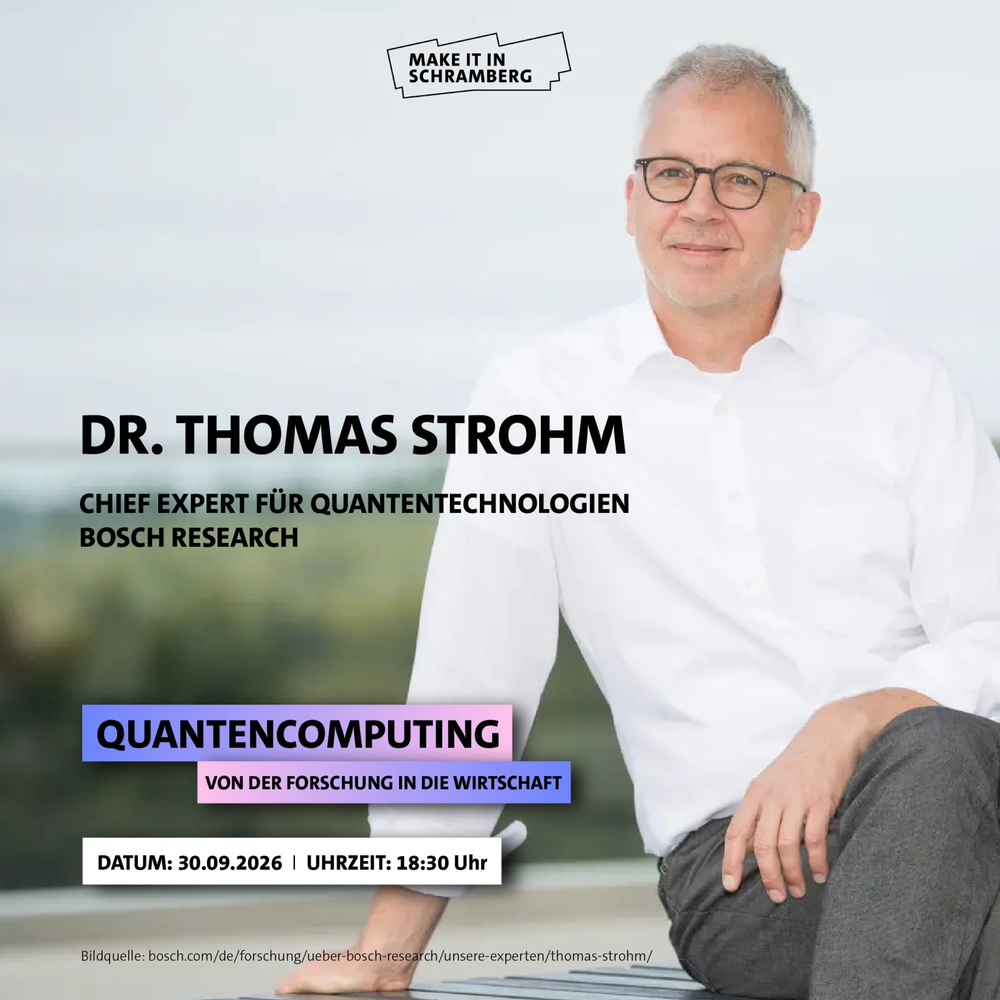
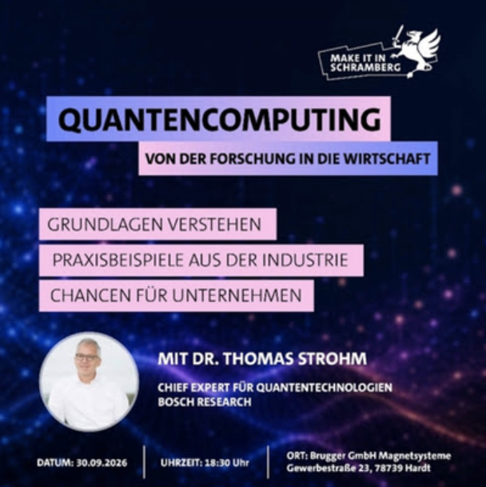
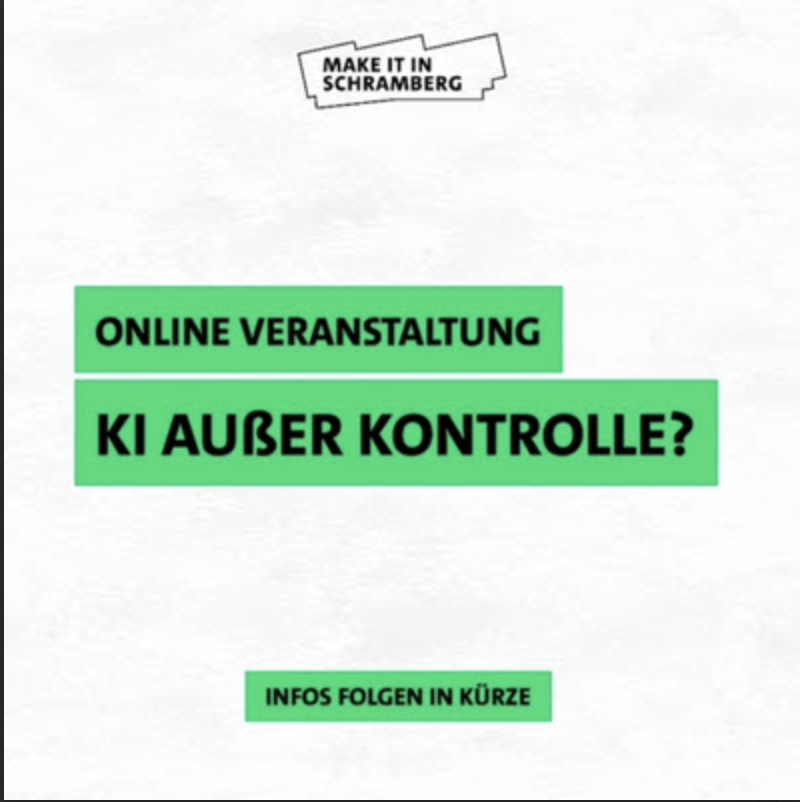

Zusammen mit dem IFC Tuttlingen – dem Innovations- und Forschungs-Centrum der Hochschule Furtwangen – starten wir die KI-Werkstatt: Unternehmen bringen ein Alltagsproblem mit, das viele teilen (Ticketsysteme, Dokumentenauswertung, Wissenssuche). Wirtschaft, Studierende und Fakultät lösen es gemeinsam mit passenden KI-Werkzeugen – so weit wir kommen. Zwei Halbtage, eine Woche dazwischen. Wo es tiefer geht, wird daraus eine Bachelorarbeit oder ein Forschungsprojekt.
Jetzt gesucht: eure Beispiele. Schreibt uns, welches Problem ihr mitbringen würdet.


Ein Physiker aus Hardt erklärt Quantencomputing – verständlich, praxisnah, ohne Physikstudium: Wie es funktioniert, woran die Industrie heute arbeitet und für welche Probleme ein Quantencomputer wirklich besser ist als ein klassischer. Danke an Brugger Magnetsysteme fürs Gastgeben und an die Wirtschaftsförderung Schramberg!
Zwei Halbtage, eine Woche dazwischen: Unternehmen, Studierende und Fakultät lösen ein gemeinsam geteiltes Problem mit KI-Werkzeugen. Erstes Beispiel: interne Ticketsysteme für IT- und Personalanfragen. Mit Prof. Dr. Martin Haimerl und Rudolf Merz vom IFC.
Thema einreichen → Alles zur Werkstatt →
Der Anthropic-Forscher Jacob Coxon ist Anfang September öffentlich zurückgetreten – aus Sorge, dass zunehmend autonome, sich selbst verbessernde KI-Systeme der menschlichen Kontrolle entgleiten könnten; Kolleg:innen bei OpenAI und anderen Laboren warnen ähnlich. Wie realistisch ist das? Wo liegt die tatsächliche Gefahr, und was heißt es, wenn KI-Agenten eigenständig handeln? Make it in Schramberg stellt dazu kurzfristig eine Online-Diskussion auf die Beine, Referenten der Universität Stuttgart sind in Abstimmung. Wer dabei sein will, meldet sich vor – und wird informiert, sobald der Termin steht.
Vormerken →Machine Vision trifft KI: Kameras, Sensorik, Embedded Vision und KI-gestützte Inspektion. Aussteller aus fast 40 Ländern – Pflichttermin für Automatisierer und Qualitätssicherung.
Zur VISION →Vortrag des ehem. FIFA-Schiedsrichters Babak Rafati: Wie mentale Stärke, Stressmanagement und Motivation den Wandel im Berufsalltag erfolgreich und nachhaltig gestalten. „Ein Vortrag, der ein Leben verändern kann." (Bayerischer Rundfunk)
Zur Anmeldung →Das KI-Night-Format startet sein Chapter in der Region Schwarzwald-Baar-Heuberg – künftig 4× pro Jahr. Zum Auftakt: Philipp Hilsenbek (stv. Hauptgeschäftsführer IHK SBH) zu KI in der Region, die Keynote „Das Kuckucksei im Maschinenraum" von Prof. Dr. Stefan Stoll (DHBW) und „Build, Partner or Buy?" mit Steffen Erath (Head of Innovation & Sustainability, Hansgrohe Group). Danach Networking – für alle Wissenslevel. #KINSBH
Heimspiel für die KI-Impact Group: Steffen Erath war bereits im November 2024 mit „Planet Centered Innovation" bei uns in Schramberg zu Gast – zum Rückblick →
Ticket sichern → Mehr zur KI-Night →Low-Code Machine Learning mit Node-RED im Produktionsumfeld: Sensordaten erfassen, Modelle trainieren, direkt in der Fertigung nutzen.
Campus Schwarzwald →Der monatliche Start-up-Treff dreht den Spieß um: Nicht die Gründer pitchen, sondern die Ansprechpartner aus der Region – in kompakten 3-Minuten-Pitches zeigen u. a. Black Forest Innovation, IHK Südlicher Oberrhein, nectanet, Sparkasse, Volksbank, AOK und Hochschule Offenburg, wie sie von der ersten Idee bis zur Gründung unterstützen. Danach Austausch bei Drinks und Snacks. Für Gründer:innen, Start-ups, Selbstständige, Studierende und alle mit Lust auf neue Perspektiven – im neuen Gründungs- und Innovationszentrum flow1986.
Kostenloses Ticket → LinkedIn-Event →Das Netzwerktreffen der Medizintechnik-Branche im Weltzentrum der Medizintechnik. Fachvorträge und Ausstellung – von KI in der Medizintechnik bis Fertigungsinnovation.
Zum Forum →Der Landesbeauftragte für Datenschutz BW bringt KI-Macher, Recht und Gesellschaft an einen Tisch: Was bedeutet KI für Alltag, Verwaltung und Unternehmen? Auch bequem im Livestream.
Zur KI-Woche →Geschäftsführende aus dem produzierenden Gewerbe treffen sich in der Industrie-4.0-Lernfabrik rund um Agentensysteme – kostenfrei, praxisnah, ohne Vertriebsagenda. Ausdrücklich ein Ort für die naiven Fragen, die man sich sonst spart. Mark Finnern ist dabei.
Zur Anmeldung →Die Eventreihe zu digitalen Zwillingen, Industrie 4.0 und KI in der Produktion – Austausch zwischen Industrie, Wissenschaft und Region im Schwarzwald.
Campus Schwarzwald →Regionales Innovationsfestival, das Unternehmen, Wissenschaft, Startups und Politik zusammenbringt – Keynotes, Masterclasses, Panels und interaktive Erlebnisstationen rund um Transformation und Zukunftstechnologien.
Zum Festival →Gemeinsame Initiative der IHK Schwarzwald-Baar-Heuberg und TechnologyMountains e.V. – ein Jahresprogramm aus Workshops, Online-Seminaren, Werksbesuchen und Zertifikatslehrgängen rund um Künstliche Intelligenz, Compliance und Digitalisierung. Eine kuratierte Sammlung, die mehrere der oben gelisteten Termine bündelt und laufend ergänzt wird.
Innovativer Entwickler maßgeschneiderter Eingabesysteme und Touch-HMI-Lösungen – von der Bedienfolie bis zum komplexen Bediensystem. Technologische Innovation und Qualität aus nächster Nähe erleben.
Zur Anmeldung →International ausgerichtetes Maschinenbau- und Automatisierungsunternehmen aus dem Schwarzwald: Handhabungs- und Automatisierungssysteme flexibel, skalierbar und zukunftssicher gestalten.
Zur Anmeldung →20+ Events, 500+ Teilnehmende, 20+ Presseartikel. Die komplette Chronik der KI-Impact Group seit 2024.
Zur Chronik →